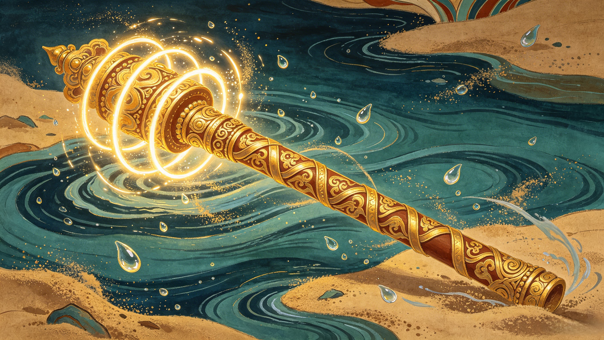

Primary Weapon
The Demon-Quelling Staff (降妖宝杖)
Forged by Lu Ban himself — the master carpenter revered as the patron god of all Chinese builders and craftsmen — Sha Wujing's Demon-Quelling Staff is a gold-ringed cudgel unlike any other. While Sun Wukong's Ruyi Jingu Bang was an oceanic pillar that could shrink to needle size, Sha Wujing's staff was purpose-built for combat from the start. Its shaft is wrapped in gold rings that glow when demons draw near, and its weight is said to be equivalent to the burden of a celestial river — immense, steady, and unstoppable. In his hands, it becomes an extension of the flowing waters he once commanded: fluid one moment, crushing the next. When he spins it underwater, the whole river responds.
